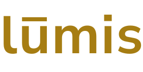

Realize a sua biometria
para acessar a plataforma.
boa tarde, Kai.
Ciclo 14 · tudo dentro da normalidade.
Seu encontro terapêutico semanal é hoje às 10h UT — Dr. Yuna Park, Módulo A.
lembrete · hojeCheck-in
Registre como você está antes de começar o ciclo.
● não feito hojeDashboard
Recursos da colônia em tempo real.
1 alerta críticoNotificações
2 não lidas. Alerta de energia e saúde mental.
2 não lidasPerfil
Prontidão 81 · sono 6h42 · check-in ok.
tudo normalStatus geral
EstávelRecursos principais
Oxigênio
O₂87%
● NormalÁgua
H₂O62%
● NormalAlimentos
Kcal45%
● AtençãoEnergia
kWh28%
● CríticoDados da colônia
- População ativa
- 247 pessoas
- Módulos operacionais
- 18 / 20
- Temperatura ext.
- −43 °C
- Próximo ciclo
- em 14h 22min
● Energia crítica — Módulo C
Reserva abaixo de 30%. Redistribuição recomendada.
Sistema de suporte
Todos os sistemas de vida operacionais.
Mensagem do sistema
“Bom ciclo, Kai. O módulo B está dentro da normalidade.”
Energia
28%
Últimas 24h
Para você, Kai
fase noturna ativa — sem captação solar por 14h
módulo C em consumo elevado — redistribuição recomendada
priorize sistemas de suporte de vida
Conservar
Aumentar
Notificações
- Energia crítica no Módulo C — reserva em 28%. Redistribuição recomendada antes de 20h UT.há 12 minutos
- Seu pico de consumo começa em 40 minutos. Considere adiantar o treino para as 18h.há 28 minutos
- Filtro de reaproveitamento de água do Módulo B operando a 94% — dentro do normal.há 1 hora
- Check-in do ciclo 13 registrado. Sua prontidão estava em 78 — ligeiramente abaixo da média.ciclo anterior
- Módulo A retomou operações completas. Produção de oxigênio normalizada.há 3 horas
Configurações gerais
Notificações
Alertas críticosativo
Lembretes de check-inativo
Mensagens do sistemasilenciado
Dispositivos conectados
Oura Ring Gen 4conectado
Sensor Módulo C3conectado
Sistema
IdiomaPortuguês
Fuso horárioUT+0
Versãolumis 1.4.2
K
Kai Mori
Engenharia de sistemas · Colônia Artêmis
Ciclo 3 de 18 · chegou em 06.Mar.2094Saúde — ciclo anterior
Bem-estar — últimos 7 ciclos
humor
↑ leve melhoradisposição
↑ subiu nos últimos 3 ciclosfoco
estávelPadrões de consumo
Rotina registrada
- acorda ~06:18 UT · treino às 21h · jantar às 20h
- pico de consumo: 19h–22h UT
- treino usa +8% energia — considere adiantar
Configurações
notificações ativas idioma: português fuso: UT+0
bem vindo, Kai
Encontro terapêutico
Dr. Yuna Park · Módulo A · Sala 3
10:00 UT